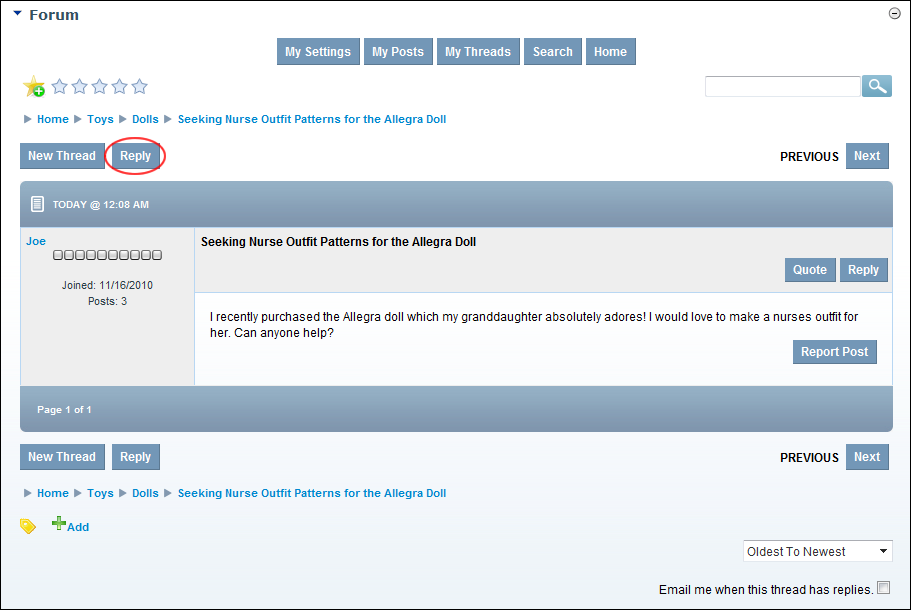

Replying to a Post
How to reply to a post in the Forum module.
- Locate and open the required post. See "Viewing any Post"
- Click the Reply link located top right above the post. This opens the Add/Edit Post page which displays the post in the Editor.
- In the Editor, enter your post, any attachments and set optional fields as required. See "Adding a Forum Post (Advanced)"
- Optional. At Notification, if you wish to receive an email when the post has a response.
- Click the Submit link.

Replying to a Post